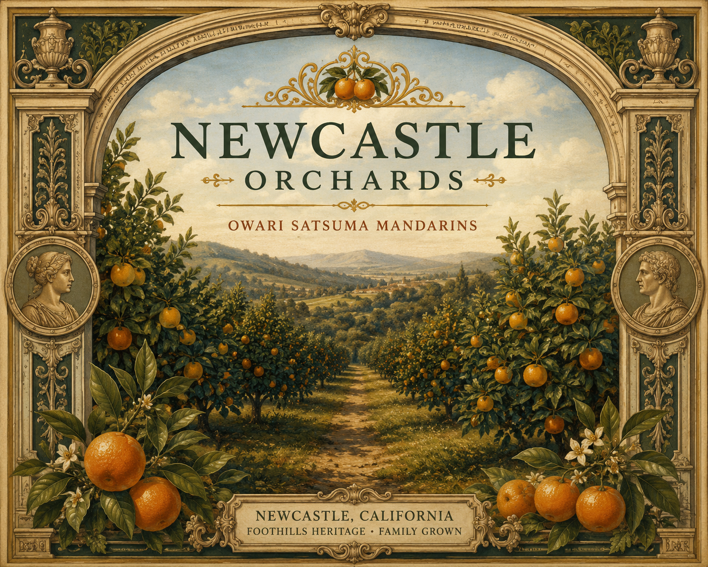

Honoring California's citrus heritage by giving every harvest a purpose.

It was Christmastime. The mandarins were piling up in the corner of the orchard.
Not because they were bad. They were perfect, bright, heavy, full of everything the tree had given them all year. They were piling up because they were too big, too small, or the wrong shape for someone else's idea of what a mandarin should look like.
I stood there and felt it: the waste of the soil, the water, and the years of tending. The tree that would outlive all of us, producing fruit nobody wanted.
“Sometimes a resource just doesn't have the right avenue to be properly utilized. That's not a tragedy. That's an opportunity, if someone is willing to build one.”
That's what Newcastle Orchards is: an avenue.
We take the fruit that Placer County growers can't sell— the overlooked, the irregular, the imperfect—and transform it into products that carry everything the land put into them. Nothing wasted.
My father planted this orchard while working nights for the railroad. My brother Eric and I grew up in these rows. We're not trying to reinvent farming. We're trying to honor it.
Every bottle we make started in a corner of an orchard that the market forgot about.
We didn't.
— Tyler Field, Co-founder & CEO
Newcastle Orchards LLC · Newcastle, California
Nestled in the Sierra Foothills.
Owari Satsuma Mandarins.
Generations rooted in California agriculture.
Questions about the orchard?
Email: tyler.feelgood.field@gmail.com